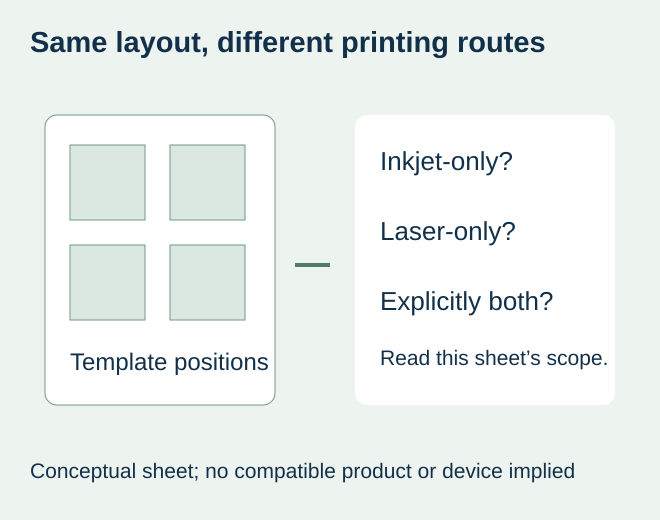
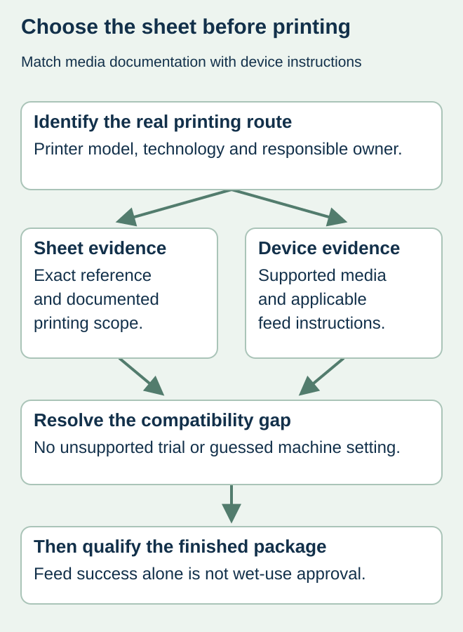

A bakery has a label layout that fits its jars and buys another white sheet with the same positions. The new pack is marked for inkjet printing, while the bakery uses a laser printer. The artwork still fits the template, but the sheet was selected for a different printing process.
Choose the complete sheet for the documented printer technology and the actual device requirements before comparing its appearance or price. Inkjet-only, laser-only and explicitly dual-compatible products are different purchasing descriptions. A sheet is not suitable for both routes merely because it is white, transparent, film-based or the right size.


Read the sheet reference, not only the template number
Obtain the exact media reference and its current printing instructions. A layout template describes label positions; it does not establish the coating, adhesive or backing supplied in a particular pack. Ask which printing technologies the complete sheet supports. If the description is unclear, leave compatibility unresolved rather than experimenting with unsupported stock.
Avery’s laser and inkjet product guidance distinguishes products for each process and products expressly intended for both. It explains that laser heat can affect unsuitable inkjet products and that a surface intended for laser output may not accept wet ink appropriately. These are manufacturer explanations for product selection, not proof that a proposed ZFU construction has been tested or approved.
Use the printing route to narrow the request
| Proposed route | Evidence to request before ordering | What does not answer the question |
|---|---|---|
| Laser | Documented laser suitability for the complete sheet and support under the actual device instructions | Correct template or a film-face description |
| Inkjet | Documented inkjet suitability, relevant ink/device restrictions and handling instructions | A generic water-resistant material statement |
| Both routes | An explicit dual-compatible reference and its applicable limitations | Combining statements from two different sheet products |
| Technology unknown | Confirm the printer model with its owner or manufacturer first | Guessing from the shape of the machine |
Use the printer manufacturer’s instructions alongside the sheet supplier’s information. Sheet dimensions, supported media, feed arrangement and any relevant limits still matter after the broad technology match. A product described for laser printing is not an automatic approval for every laser device. This guide supplies no universal temperature, thickness or driver setting.


Keep feed compatibility separate from the finished food label
A hypothetical bakery may print dry presentation samples, while its retail jars later encounter refrigeration or wiping. The printing-route choice answers whether the proposed sheet is intended for the device. It does not approve the ink, toner, face, adhesive and actual package through their later use.
If the printing route is supported, agree a representative output evaluation using the actual file and package. The inkjet wet-handling guide addresses that downstream qualification. The sheet-curl guide addresses incoming condition and physical handling. Neither should be used to justify putting a sheet with an unsupported printing route through the machine.
Compare supply options using the same deliverable
If a suitable in-house sheet has not been confirmed, ask about another supported media reference or an outsourced printed-label proposal. Compare the actual work and supply scope: artwork preparation, required quantities, printing responsibility and the final package requirement. Do not assume that changing an adhesive will fix an ink-reception mismatch, or that an added laminate makes an unsupported sheet safe for a printer.
A substitute sheet should retain its own identity even if the template is unchanged. Confirm whether the replacement remains supported for the device and which previous output evidence still represents it. Record a genuine dual-compatible designation when supplied; do not create one by combining an old laser sample and a new inkjet specification.
Make the inquiry answerable
Send the printer model, known technology, current sheet reference or proposed stock, label dimensions and full sheet format. State whether the supplier is being asked for blank printable stock or finished printed labels. Add the real package surface and intended handling so a print-compatible offer is not mistaken for a complete food-pack performance commitment.
The useful purchase outcome is an identified sheet and supported printing route, followed by the required finished-label evidence. Until those inputs exist, a price for an unspecified “waterproof sheet” is an incomplete comparison. Actual blank-sheet availability, printing scope and material options require confirmation for the project.
Discuss the unresolved label requirement
Identify your printer make/model and technology, the current or proposed complete sheet reference, label and sheet dimensions, artwork, quantity and actual food package. Ask whether a supported sheet or outsourced printed-label option is available. Review the food-label product scope and prepare a label specification inquiry. The contact page opens an email draft and lists email or WhatsApp for attachments. Supply, proof options, testing, pricing and timing require project confirmation.